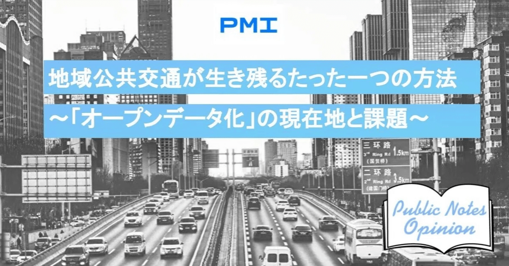

第１章 Googleに載らないものは存在しないと同義 ～進む“公共交通のオープンデータ化”と残された課題～
デジタル庁の設立など、デジタルトランスフォーメーション（以下「DX」といいます。）の必要性が盛んに主張されるようになってきました。
実は、そうした盛り上がりよりも少し前から、公共交通業界においても、近年DXは大きな進捗を見せています。
特に公共交通業界で一気にバズワードとなっているのが、Mobility as a Service（以下「MaaS」といいます。）です。
MaaSとは、航空、鉄道やバス、タクシーなど様々な移動手段がバラバラに存在していた公共交通のあり方を、ICT技術の進展を基礎にして「出発から到着までの複数の移動手段すべての検索・予約・決済などをひとつの一元的横断的なサービスにする」という概念です。
MaaSには「検索の統合」「予約の統合」「決済の統合」さらには「制度の統合」といったいくつかの切り口がありますが、特に具体的な広がりが進んでいるのが「検索の統合」を目指すための「公共交通のオープンデータ化」です。
公共交通のオープンデータ化とは、公共交通の様々な情報をオープンデータとして公開し、GoogleなどのICTプラットフォーマーに活用させ、公共交通情報への利用者のアクセスをより容易にする、という取組みです。例えば、交通情報の公開というお題目で、自社HPだけで時刻表やルートを公開しているケースが散見されますが、利用者からすれば交通サービスの乗り換えのたびに異なる事業者のHPを検索したり、事業者ごとに異なる表示を読み解いたりと、使いにくいのが現状です。公共交通情報がオープンデータ化されれば、利用者が日ごろ使っている情報プラットフォームがそのオープンデータを自由に使用・加工できるようになり、情報検索の専門的知見を活かした洗練されたUIで、複数のサービスを一元的に検索できるようになります。「MaaS」の各段階の中でも、その一番基礎となる段階として公共交通の情報への一元的なアクセスを可能にするべく、国内外を問わず取組みが進んでいます。
日本においても、特に多くの事業者が入り乱れている路線バスを中心にオープンデータ化で利便性を高めようという取組みが進んでいます。
公共交通情報は、ダイヤやルートといった静的データと、リアルタイムに車両がどこにいるか・待ち時間が何分かといった動的データのふたつに分けられます。
静的データは、Googleフォーマットを起源とするGTFS形式がほぼ国際標準となっており、日本においても、国土交通省がGTFS形式に準拠したGTFS-JPというフォーマットを標準フォーマットとして制定し、大手のバス会社はほぼ対応しつつあり、自治体の小規模なコミュニティバスにもだんだんと広がっています。
出典：https://www.gtfs.jp/
「Googleに載らないものは存在しないと同義だ」という掛け声と実態
公共交通のオープンデータ化は、複数の情報プラットフォームで公開されていくことを想定していますが、やはり一番の想定は世界最大手の検索サービス、Google Mapsに掲載され、そこで検索できるようになることです。そのため、「Googleに載らないものは存在しないと同義だ」という掛け声が公共交通のオープンデータ化に際してよく使われます。
都市圏や観光地の交通事業者にはこの掛け声が効果的である一方で、公共交通のオープンデータ化を全国的に普及させる上での課題となっているのが、路線バス、コミュニティバス、乗合タクシーといった地方部の毛細血管的なサービス、いわゆる「ラストワンマイルサービス」への普及です。
公共交通、特に地方部のラストワンマイルサービスは、少子高齢化や過疎化が進む中でどんどん経営状態が悪化しており（※１）、それにともなって赤字路線の減便や廃止が進んでいます（※２）。
※１ 地方部でのバス事業の経営状況
出典：国土交通省 総合政策局公共交通政策部 乗合バス等地域交通における競争政策のあり方について（平成30年12月19日）
※２ 一般路線バスの路線廃止状況
出典：国土交通省 総合政策局公共交通政策部 地域公共交通に関する最近の動向等（平成28年6月15日）
そうして減ってしまった民間路線バスの穴を埋めようと自治体毎に様々なラストワンマイルサービスが運行されています。
大手事業者がオープンデータ化を進めても、そのネットワークから切り離され、細分化されたこれらのサービスは依然としてアナログのまま残ります。そして、そうした切り離されたラストワンマイルサービスを細切れに維持している自治体にとって、オープンデータ化のためのデジタル化やそれを維持・更新する体制の整備は多大な負担となります。
さらに、費用対効果の観点でも、観光客なんてめったに来ない、地元の高齢者が通院したり、買物にいったり、あるいはわずかに残る子どもが通学したりするために、文字通り「利用者の顔が見える」サービスとして維持されている地方部のラストワンマイルサービスにとって、「Googleで検索できること」は全く訴求しません。
このようなラストワンマイルサービスに対してまでオープンデータ化を求めるべきなのでしょうか？
次章では、この問いに対する答えを探っていきたいと思います。
第１章 Googleに載らないものは存在しないと同義 ～進む“公共交通のオープンデータ化”と残された課題～第２章 ラストワンマイルサービスも含め「オープンデータ化」を徹底すべき理由 ～“潜在需要”獲得と無限の可能性～第３章 あらゆる情報をオープンデータ化すべき理由 ～“常に最適化される地域の公共交通”も実現可能に～第４章 無限の可能性を生む未来のために ～オープンデータ化の推進とデータリテラシーの両立を～第５章 公共交通のオープンデータを「仕組み化」した山形県 ～先進的な取り組みと見えてきた課題～
執筆者：酒井達朗1984年愛知県生まれ。国土交通省に入省し、都市計画、国際航空、道路法制等を担当。米仏への留学後、2017年から地域公共交通政策担当の課長補佐として、MaaS導入初期の方針策定や地域交通に対する独占禁止法の適用除外規定の策定等に携わる。2019年より山形県総合交通政策課長、2021年より現在は同県企画調整課長。公共政策学修士（東京大学）、Master of Arts in Law and Diplomacy(Tufts大学)、経済学博士（埼玉大学）。https://note.com/n_shirokitsune/※本稿は個人的見解であり、所属する組織とは関係ありません。